| Earlier idea | Question it helped us answer | How it connects to this chapter |
|---|---|---|
| Sampling variation | How much can sample estimates move around? | Posterior distributions also describe uncertainty. |
| Bootstrap simulation | What uncertainty is implied by the data we observed? | We can simulate from posterior distributions too. |
| Likelihood | Which parameter values make the data more plausible? | The likelihood is one ingredient in the posterior. |
| Bayesian posterior | What should we believe about the parameter after seeing the data? | Posterior draws are simulated plausible parameter values. |
| Decision-making | What should we do, given uncertainty? | Actions can be compared using posterior simulation. |
9 Bayesian Simulation and Decisions
NoteLearning Objectives
By the end of this chapter, you should be able to:
- Explain why simulation is useful in Bayesian inference.
- Describe posterior draws as simulated plausible values of an unknown parameter.
- Use posterior draws to calculate posterior means, medians, credible intervals, and posterior probabilities.
- Explain the difference between simulating repeated datasets and simulating from a posterior distribution.
- Use grid approximation to approximate a posterior distribution.
- Explain why grid approximation becomes difficult in larger models.
- Describe the basic idea of Markov chain Monte Carlo, especially the Metropolis algorithm.
- Use trace plots and posterior density plots to diagnose whether a simulated chain is behaving sensibly.
- Explain how different loss functions lead to different Bayesian point estimates.
- Use posterior simulation to compare possible decisions under uncertainty.
9.1 The late-night bus problem
Imagine a university is considering a late-night bus service from campus to nearby train stations during the exam period.
The service would be useful if enough students would actually use it. If only a small number of students used the bus, the university would spend money running an almost empty service. If many students wanted it, not running the service could leave students with fewer safe transport options late at night.
So the university runs a small survey.
Out of \(40\) students asked:
\[ \begin{aligned} x &= 26 \\ n &= 40 \end{aligned} \]
where \(x\) is the number of students who said they would use the late-night bus.
At first glance, the sample proportion is:
\[ \begin{aligned} \hat{p} &= \frac{x}{n} \\ &= \frac{26}{40} \\ &= 0.65. \end{aligned} \]
That seems promising. But the university should not act as if the true proportion is exactly \(0.65\). The survey was small. Another sample of \(40\) students might have produced a different answer.
This is where the ideas from earlier chapters return.
In Chapter 4, we saw that sample estimates vary from sample to sample. In Chapter 6, we used the bootstrap to simulate how a statistic might vary if we repeatedly sampled from the data we had. In Chapter 7, we introduced likelihood as a way of asking which parameter values make the observed data more or less plausible. In Chapter 8, we introduced Bayesian inference, where prior information and data combine to form a posterior distribution.
This chapter brings those threads together.
Once we have a posterior distribution, simulation gives us a practical way to work with it.
The aim is not just to find one number. The aim is to describe uncertainty and then use that uncertainty to make better decisions.
9.2 From posterior distributions to posterior draws
In Chapter 8, we used the beta-binomial model for an unknown proportion.
Suppose \(\theta\) is the true proportion of students who would use the late-night bus.
A simple model is:
\[ \begin{aligned} X \mid \theta &\sim \text{Binomial}(n, \theta). \end{aligned} \]
Here, \(X\) is the number of students in the survey who say yes.
We also need a prior distribution for \(\theta\). Suppose we start with a mild prior:
\[ \begin{aligned} \theta &\sim \text{Beta}(2, 2). \end{aligned} \]
This prior is centred around \(0.5\), but it is not very strong. It says that before collecting the survey data, proportions near \(0.5\) seem slightly more plausible than values near \(0\) or \(1\), but we are still open to a wide range of possibilities.
Because the beta distribution is conjugate to the binomial likelihood, the posterior is also beta:
\[ \begin{aligned} \theta \mid X = 26 &\sim \text{Beta}(2 + 26,\ 2 + 40 - 26) \\ &\sim \text{Beta}(28,\ 16). \end{aligned} \]
This is an analytic result. We know the exact form of the posterior distribution.
But there is another way to work with this posterior. We can simulate from it.
alpha_prior <- 2
beta_prior <- 2
x <- 26
n <- 40
alpha_post <- alpha_prior + x
beta_post <- beta_prior + n - x
posterior_draws <- tibble(
draw = 1:10000,
theta = rbeta(10000, alpha_post, beta_post)
)
posterior_draws |>
ggplot(aes(x = theta, y = after_stat(density), color = "Posterior draws")) +
geom_histogram(bins = 40, fill = "white") +
geom_density(linewidth = 1) +
labs(
x = expression(theta),
y = "Density",
color = NULL,
title = "Posterior draws from Beta(28, 16)",
subtitle = "Each draw is one plausible value of the true proportion"
) +
guides(color = guide_legend(override.aes = list(fill = NA)))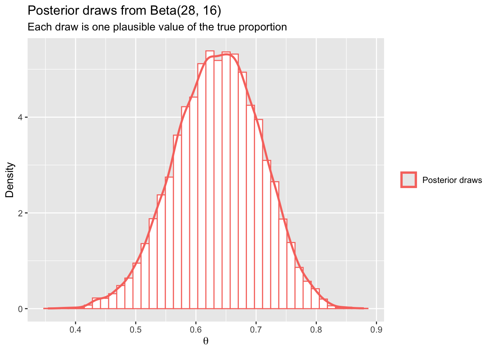
Each simulated value is one plausible value of \(\theta\) after combining the prior and the survey data.
This is different from the bootstrap.
In the bootstrap, we resampled the observed data to simulate possible samples. In Bayesian posterior simulation, we simulate possible parameter values.
| Simulation type | What is simulated? | What varies? | Typical output | Typical interval |
|---|---|---|---|---|
| Bootstrap simulation | New samples or statistics based on resampling the observed data | The data or statistic | Bootstrap distribution of a statistic | Bootstrap confidence interval |
| Bayesian posterior simulation | Parameter values from the posterior distribution | The unknown parameter | Posterior distribution of a parameter | Bayesian credible interval |
ImportantPosterior draws are not new data
A posterior draw is not a new student survey. It is not a possible future dataset.
A posterior draw is a simulated plausible value of the unknown parameter, given the prior and the data we observed.
9.3 Summarising posterior draws
Once we have posterior draws, many Bayesian summaries become straightforward.
We can estimate the posterior mean:
\[ \begin{aligned} E(\theta \mid X) &\approx \text{mean of posterior draws}. \end{aligned} \]
We can estimate a \(95\%\) credible interval:
\[ \begin{aligned} \text{95\% credible interval} &\approx \text{middle 95\% of posterior draws}. \end{aligned} \]
We can estimate posterior probabilities:
\[ \begin{aligned} P(\theta > 0.60 \mid X) &\approx \text{proportion of posterior draws greater than }0.60. \end{aligned} \]
posterior_summary <- posterior_draws |>
summarise(
`Posterior mean` = mean(theta),
`Posterior median` = median(theta),
`2.5% quantile` = quantile(theta, 0.025),
`97.5% quantile` = quantile(theta, 0.975),
`P(theta > 0.60)` = mean(theta > 0.60),
`P(theta > 0.70)` = mean(theta > 0.70)
) |>
pivot_longer(
cols = everything(),
names_to = "Summary",
values_to = "Value"
)
posterior_summary |>
mutate(Value = round(Value, 3)) |>
gt() |>
tab_options(table.width = pct(80))| Summary | Value |
|---|---|
| Posterior mean | 0.636 |
| Posterior median | 0.638 |
| 2.5% quantile | 0.493 |
| 97.5% quantile | 0.769 |
| P(theta > 0.60) | 0.697 |
| P(theta > 0.70) | 0.193 |
The interpretation is direct. If \(P(\theta > 0.60 \mid X)\) is large, then after seeing the survey data, there is strong posterior evidence that more than \(60\%\) of students would use the bus.
A useful visual habit is to shade posterior probabilities. For example, suppose the university thinks the service is worth serious consideration if more than \(60\%\) of students would use it.
posterior_density <- tibble(
theta = seq(0.001, 0.999, length.out = 1000),
density = dbeta(theta, alpha_post, beta_post),
region = if_else(theta > 0.60, "theta > 0.60", "theta <= 0.60")
)
posterior_density |>
ggplot(aes(x = theta, y = density, color = region, fill = region)) +
geom_area(alpha = 0.25) +
geom_line(linewidth = 1) +
geom_vline(xintercept = 0.60, linetype = "dashed") +
labs(
x = expression(theta),
y = "Posterior density",
color = NULL,
fill = NULL,
title = "Posterior probability that the true proportion is above 0.60"
)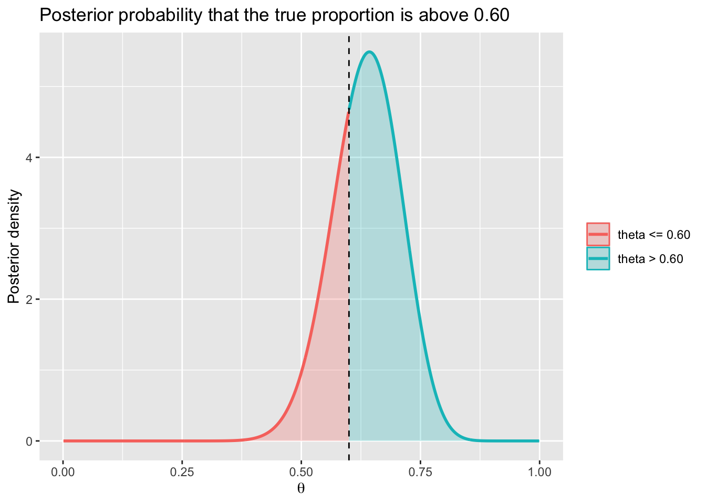
This is one of the most useful features of Bayesian inference. We can ask questions about the unknown parameter directly.
What is the probability that the true proportion is above \(0.60\), given the data?
In a Bayesian analysis, that question is natural.
9.4 Simulation error
Posterior simulation is powerful, but it is still simulation.
If we simulate \(100\) posterior draws, our summaries will be a little rough. If we simulate \(10{,}000\) draws, they will usually be more stable. The exact posterior has not changed. Only our simulation-based approximation has improved.
set.seed(2420)
simulation_sizes <- c(100, 500, 2000, 10000)
simulation_error <- map_dfr(
simulation_sizes,
function(m) {
draws <- rbeta(m, alpha_post, beta_post)
tibble(
`Number of posterior draws` = m,
`Posterior mean estimate` = mean(draws),
`P(theta > 0.60) estimate` = mean(draws > 0.60),
`Lower credible limit` = quantile(draws, 0.025),
`Upper credible limit` = quantile(draws, 0.975)
)
}
)
simulation_error |>
mutate(across(where(is.numeric), ~ round(.x, 3))) |>
gt() |>
tab_options(table.width = pct(100))| Number of posterior draws | Posterior mean estimate | P(theta > 0.60) estimate | Lower credible limit | Upper credible limit |
|---|---|---|---|---|
| 100 | 0.645 | 0.700 | 0.485 | 0.774 |
| 500 | 0.634 | 0.678 | 0.487 | 0.770 |
| 2000 | 0.635 | 0.692 | 0.494 | 0.768 |
| 10000 | 0.637 | 0.701 | 0.493 | 0.772 |
The estimates should become more stable as the number of draws increases. This is called Monte Carlo error. It is the small amount of numerical error caused by using a finite number of simulation draws.
NoteMonte Carlo error
Monte Carlo error is not statistical uncertainty about \(\theta\).
It is uncertainty caused by approximating a posterior summary using a finite number of simulated draws.
We can reduce Monte Carlo error by using more posterior draws.
9.5 Why conjugacy is not enough
The beta-binomial example is convenient because the posterior has a known form.
\[ \begin{aligned} \text{Beta prior} \times \text{Binomial likelihood} &\rightarrow \text{Beta posterior}. \end{aligned} \]
This is called conjugacy.
Conjugate models are useful for learning because they let us see the logic clearly. But many real statistical models are not conjugate, or become inconvenient once we add more realistic details.
Suppose we want to model late-night bus demand, but we believe demand depends on:
- whether students live on campus or commute;
- whether they have an exam the next morning;
- whether it is raining;
- whether they usually study late;
- whether they live near a train station;
- whether the survey was taken during SWOTVAC or during semester.
Now the model may have many parameters. The posterior may not have a tidy formula.
| Situation | Example | Posterior form | What we can do |
|---|---|---|---|
| Simple conjugate model | One unknown proportion with a beta prior | Known distribution | Use algebra or direct simulation from the known posterior |
| More realistic model | Demand depends on several student characteristics | Often not available in a simple formula | Approximate the posterior using computational methods |
This is where simulation becomes more than a convenience. It becomes a way of doing Bayesian inference when algebra is not enough.
Before we get to Markov chain Monte Carlo, we will start with the simplest computational idea: grid approximation.
9.6 Grid approximation
A grid approximation is a brute-force way to approximate a posterior distribution.
The idea is simple.
- Choose many possible values of the parameter.
- Calculate the prior density at each value.
- Calculate the likelihood at each value.
- Multiply prior by likelihood.
- Normalise the result so the weights add to \(1\).
This gives a discrete approximation to the posterior.
Let us return to the bus survey.
We use the same model:
\[ \begin{aligned} X \mid \theta &\sim \text{Binomial}(40, \theta), \\ \theta &\sim \text{Beta}(2, 2). \end{aligned} \]
Instead of using the conjugate formula, we create a grid of possible \(\theta\) values.
grid_posterior <- tibble(
theta = seq(0.001, 0.999, length.out = 1000)
) |>
mutate(
prior = dbeta(theta, alpha_prior, beta_prior),
likelihood = dbinom(x, size = n, prob = theta),
unnormalised_posterior = prior * likelihood,
posterior_weight = unnormalised_posterior / sum(unnormalised_posterior)
)
grid_posterior |>
select(theta, prior, likelihood, unnormalised_posterior, posterior_weight) |>
slice(seq(1, 1000, by = 150)) |>
mutate(across(where(is.numeric), ~ round(.x, 6))) |>
gt() |>
tab_options(table.width = pct(100))| theta | prior | likelihood | unnormalised_posterior | posterior_weight |
|---|---|---|---|---|
| 0.001000 | 0.005994 | 0.000000 | 0.000000 | 0.000000 |
| 0.150850 | 0.768565 | 0.000000 | 0.000000 | 0.000000 |
| 0.300700 | 1.261676 | 0.000004 | 0.000005 | 0.000000 |
| 0.450550 | 1.485328 | 0.005271 | 0.007830 | 0.000238 |
| 0.600399 | 1.439520 | 0.106618 | 0.153479 | 0.004672 |
| 0.750249 | 1.124252 | 0.048535 | 0.054566 | 0.001661 |
| 0.900099 | 0.539524 | 0.000015 | 0.000008 | 0.000000 |
The posterior weights are tiny because there are many grid points. What matters is their relative size. Values of \(\theta\) that make the prior and likelihood product large receive more posterior weight.
grid_long <- grid_posterior |>
transmute(
theta,
Prior = prior / max(prior),
Likelihood = likelihood / max(likelihood),
Posterior = posterior_weight / max(posterior_weight)
) |>
pivot_longer(
cols = c(Prior, Likelihood, Posterior),
names_to = "quantity",
values_to = "scaled_value"
)
grid_long |>
ggplot(aes(x = theta, y = scaled_value, color = quantity)) +
geom_line(linewidth = 1) +
labs(
x = expression(theta),
y = "Scaled value",
color = NULL,
title = "Grid approximation: prior, likelihood, and posterior",
subtitle = "Each curve is scaled to have maximum value 1 so the shapes can be compared"
)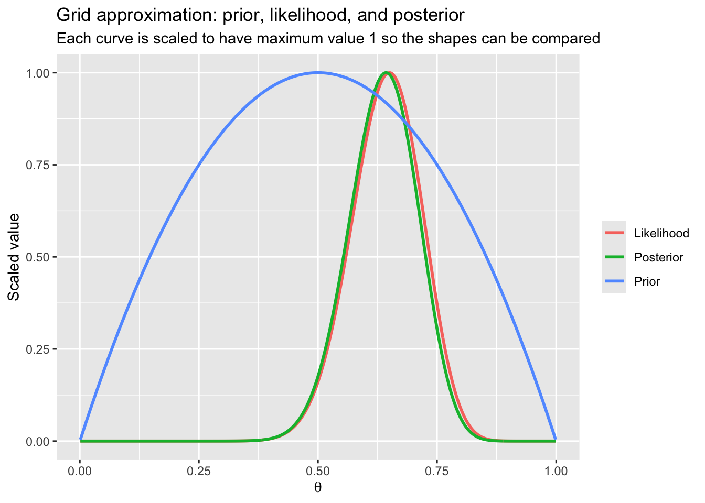
The posterior sits between the prior and the likelihood. It is not simply an average of the two curves, but it reflects both. The prior says what was plausible before the data. The likelihood says what the survey data support. The posterior combines them.
9.6.1 Sampling from the grid
Once we have grid weights, we can sample from them.
set.seed(2420)
grid_draws <- tibble(
draw = 1:10000,
theta = sample(
grid_posterior$theta,
size = 10000,
replace = TRUE,
prob = grid_posterior$posterior_weight
)
)
grid_draws |>
ggplot(aes(x = theta, y = after_stat(density), color = "Grid posterior draws")) +
geom_histogram(bins = 40, fill = "white") +
geom_density(linewidth = 1) +
labs(
x = expression(theta),
y = "Density",
color = NULL,
title = "Posterior draws from the grid approximation"
) +
guides(color = guide_legend(override.aes = list(fill = NA)))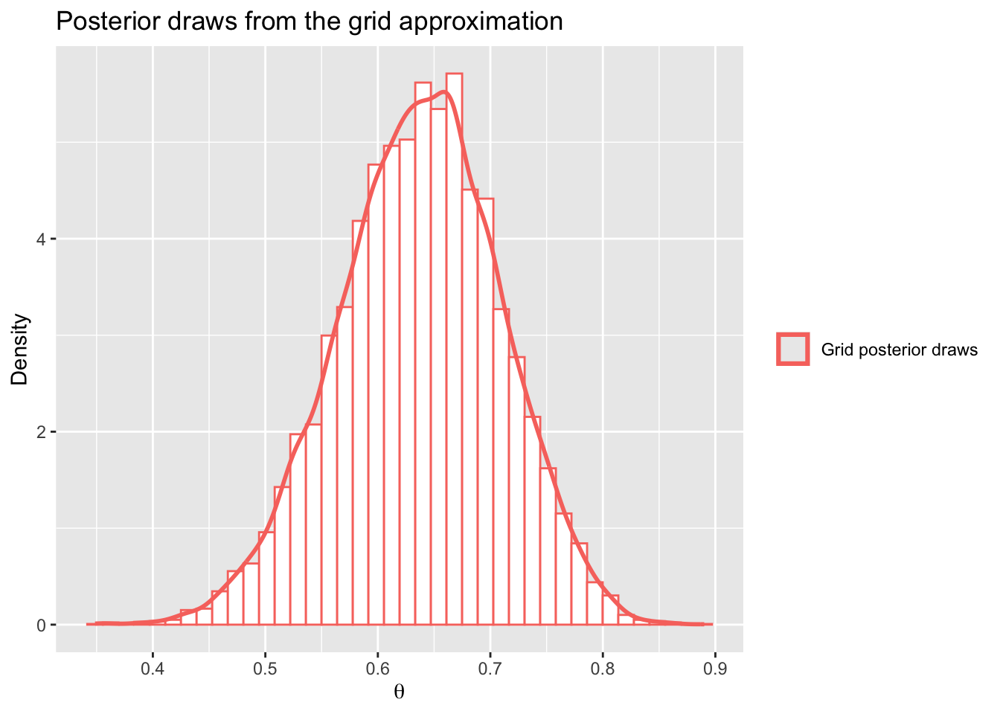
We can compare the grid approximation with the exact beta posterior.
comparison_density <- tibble(
theta = seq(0.001, 0.999, length.out = 1000),
`Exact Beta posterior` = dbeta(theta, alpha_post, beta_post),
`Grid approximation` = grid_posterior$posterior_weight /
diff(range(grid_posterior$theta)) * length(grid_posterior$theta)
) |>
pivot_longer(
cols = c(`Exact Beta posterior`, `Grid approximation`),
names_to = "method",
values_to = "density"
)
comparison_density |>
ggplot(aes(x = theta, y = density, color = method)) +
geom_line(linewidth = 1) +
labs(
x = expression(theta),
y = "Density",
color = NULL,
title = "The grid approximation closely matches the exact posterior"
)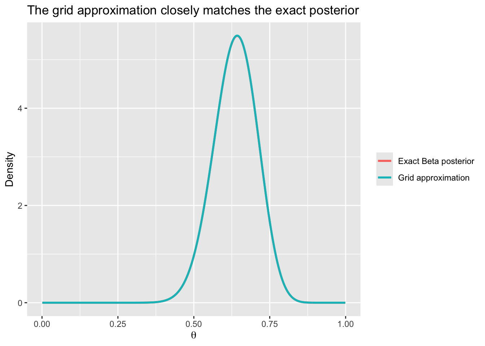
The grid method is deliberately simple. It is also important because it makes Bayesian computation visible.
We did not need a magic formula. We used the central Bayesian relationship:
\[ \begin{aligned} \text{posterior} &\propto \text{prior} \times \text{likelihood}. \end{aligned} \]
Then we normalised the result.
TipGrid approximation is Bayes by calculation
Grid approximation is not a different kind of Bayesian inference.
It is the same Bayesian idea implemented by direct calculation over many possible parameter values.
9.7 Why grids do not scale well
For one unknown parameter, a grid is easy.
For two unknown parameters, we need a two-dimensional grid. For three, a three-dimensional grid. The number of grid points grows quickly.
Suppose we use \(100\) possible values for each unknown parameter.
| Number of parameters | Grid points per parameter | Total grid points |
|---|---|---|
| 1 | 100 | 100 |
| 2 | 100 | 10,000 |
| 3 | 100 | 1,000,000 |
| 4 | 100 | 100,000,000 |
| 5 | 100 | 10,000,000,000 |
| 6 | 100 | 1,000,000,000,000 |
With six parameters, a \(100\)-point grid in each dimension would require one trillion grid points. That is not a convenient calculation.
This is sometimes called the curse of dimensionality. It is one reason Bayesian computation needs smarter simulation methods.
9.8 The idea of MCMC
Markov chain Monte Carlo, usually shortened to MCMC, is a family of methods for drawing samples from complicated posterior distributions.
The name sounds intimidating, but the intuition is approachable.
Imagine a walker exploring a landscape. The height of the landscape represents the posterior density. High places are parameter values that are more plausible after seeing the data. Low places are parameter values that are less plausible.
A good Bayesian simulation should spend more time in the high-posterior regions and less time in the low-posterior regions.
MCMC does this by creating a sequence of draws:
\[ \begin{aligned} \theta_1,\ \theta_2,\ \theta_3,\ \ldots,\ \theta_m. \end{aligned} \]
Each draw depends on the previous draw. That is why it is called a chain.
The goal is for the long-run behaviour of the chain to match the posterior distribution.
| Term | Meaning in this chapter |
|---|---|
| Monte Carlo | Using simulation to approximate a quantity |
| Markov chain | A sequence where the next value depends on the current value |
| MCMC | A simulation method that constructs a chain whose long-run distribution is the posterior |
We will not try to cover all of MCMC. Modern Bayesian software often uses advanced algorithms such as Hamiltonian Monte Carlo. Here, we focus on one simple algorithm: the random-walk Metropolis algorithm.
The aim is to understand the idea, not to become an expert in computational Bayesian statistics.
9.9 A gentle Metropolis algorithm
The Metropolis algorithm works by proposing small moves and deciding whether to accept them.
For the bus survey, the posterior density is proportional to:
\[ \begin{aligned} f(\theta \mid x) &\propto f(x \mid \theta)f(\theta) \\ &\propto \theta^x(1 - \theta)^{n - x}\theta^{\alpha - 1}(1 - \theta)^{\beta - 1}. \end{aligned} \]
For our example:
\[ \begin{aligned} f(\theta \mid x) &\propto \theta^{26}(1 - \theta)^{14}\theta^{1}(1 - \theta)^{1} \\ &\propto \theta^{27}(1 - \theta)^{15}. \end{aligned} \]
We do not actually need the normalising constant. This is one of the useful features of Metropolis. We only need to compare posterior heights.
The algorithm is:
- Start at a possible value of \(\theta\).
- Propose a nearby value \(\theta^*\).
- Compare the posterior height at \(\theta^*\) with the posterior height at the current value.
- If the proposal is better, accept it.
- If the proposal is worse, sometimes accept it anyway.
- Repeat many times.
Accepting worse moves may sound strange. But it helps the chain explore the full posterior rather than getting stuck at the highest point.
ImportantWhy accept worse moves?
If the chain only accepted moves to higher posterior density, it would climb to the mode and stay there.
A posterior distribution is not only about the best value. It is about the whole range of plausible values.
log_posterior <- function(theta, x, n, alpha, beta) {
ifelse(
theta <= 0 | theta >= 1,
-Inf,
dbinom(x, size = n, prob = theta, log = TRUE) +
dbeta(theta, alpha, beta, log = TRUE)
)
}
run_metropolis <- function(n_iter, start, proposal_sd, x, n, alpha, beta) {
theta <- numeric(n_iter)
accepted <- logical(n_iter)
theta[1] <- start
for (i in 2:n_iter) {
proposal <- rnorm(1, mean = theta[i - 1], sd = proposal_sd)
log_ratio <- log_posterior(proposal, x, n, alpha, beta) -
log_posterior(theta[i - 1], x, n, alpha, beta)
if (log(runif(1)) < log_ratio) {
theta[i] <- proposal
accepted[i] <- TRUE
} else {
theta[i] <- theta[i - 1]
}
}
tibble(
iteration = 1:n_iter,
theta = theta,
accepted = accepted
)
}
set.seed(2420)
metropolis_draws <- run_metropolis(
n_iter = 12000,
start = 0.30,
proposal_sd = 0.06,
x = x,
n = n,
alpha = alpha_prior,
beta = beta_prior
) |>
mutate(
stage = if_else(iteration <= 2000, "Warm-up", "Kept draws")
)
metropolis_draws |>
ggplot(aes(x = iteration, y = theta, color = stage)) +
geom_line(alpha = 0.8) +
labs(
x = "Iteration",
y = expression(theta),
color = NULL,
title = "A Metropolis chain for the bus survey posterior",
subtitle = "Early warm-up draws are often discarded"
)
The trace plot shows the chain wandering around the high-posterior region. Early in the chain, the values may still reflect the starting point. These early values are often called warm-up or burn-in draws.
For this simple example, the chain quickly reaches the main posterior region. In more complicated models, warm-up and convergence are more serious issues.
Let us discard the first \(2000\) iterations and compare the remaining draws with the exact posterior.
metropolis_kept <- metropolis_draws |>
filter(iteration > 2000)
exact_density <- tibble(
theta = seq(0.001, 0.999, length.out = 1000),
density = dbeta(theta, alpha_post, beta_post)
)
metropolis_kept |>
ggplot(aes(x = theta, y = after_stat(density), color = "Metropolis draws")) +
geom_histogram(bins = 40, fill = "white") +
geom_density(linewidth = 1) +
geom_line(
data = exact_density,
aes(x = theta, y = density, color = "Exact posterior"),
linewidth = 1
) +
labs(
x = expression(theta),
y = "Density",
color = NULL,
title = "Metropolis draws approximate the posterior distribution"
) +
guides(color = guide_legend(override.aes = list(fill = NA)))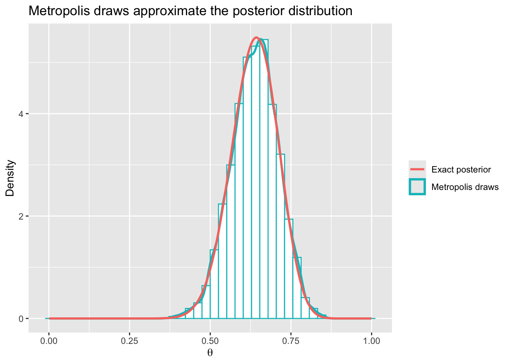
The Metropolis draws are not independent in the same way as the direct rbeta() draws were. Each draw depends on the previous draw. But if the chain is working well, the collection of kept draws still approximates the posterior distribution.
metropolis_summary <- metropolis_kept |>
summarise(
`Acceptance rate` = mean(accepted),
`Posterior mean` = mean(theta),
`Posterior median` = median(theta),
`2.5% quantile` = quantile(theta, 0.025),
`97.5% quantile` = quantile(theta, 0.975),
`P(theta > 0.60)` = mean(theta > 0.60)
) |>
pivot_longer(
cols = everything(),
names_to = "Summary",
values_to = "Value"
)
metropolis_summary |>
mutate(Value = round(Value, 3)) |>
gt() |>
tab_options(table.width = pct(80))| Summary | Value |
|---|---|
| Acceptance rate | 0.749 |
| Posterior mean | 0.638 |
| Posterior median | 0.640 |
| 2.5% quantile | 0.493 |
| 97.5% quantile | 0.774 |
| P(theta > 0.60) | 0.705 |
The exact numbers will not be identical to the analytic posterior summaries, because this is a simulation. But they should be close.
9.10 What can go wrong with MCMC?
MCMC is powerful, but it is not magic. A chain can behave badly.
One common problem is that the proposed steps are too small. The chain moves, but very slowly. It may take a long time to explore the posterior.
Another problem is that the proposed steps are too large. The chain proposes values that are often unreasonable, so many proposals are rejected. The chain may stay in the same place for long stretches.
set.seed(2420)
chain_small_steps <- run_metropolis(
n_iter = 3000,
start = 0.30,
proposal_sd = 0.005,
x = x,
n = n,
alpha = alpha_prior,
beta = beta_prior
) |>
mutate(chain = "Proposal steps too small")
chain_large_steps <- run_metropolis(
n_iter = 3000,
start = 0.30,
proposal_sd = 0.50,
x = x,
n = n,
alpha = alpha_prior,
beta = beta_prior
) |>
mutate(chain = "Proposal steps too large")
chain_good_steps <- run_metropolis(
n_iter = 3000,
start = 0.30,
proposal_sd = 0.06,
x = x,
n = n,
alpha = alpha_prior,
beta = beta_prior
) |>
mutate(chain = "Reasonable proposal steps")
bind_rows(chain_small_steps, chain_good_steps, chain_large_steps) |>
ggplot(aes(x = iteration, y = theta, color = chain)) +
geom_line(alpha = 0.8) +
facet_wrap(~ chain, ncol = 1) +
labs(
x = "Iteration",
y = expression(theta),
color = NULL,
title = "Different proposal sizes can produce very different chains"
) +
theme(legend.position = "none")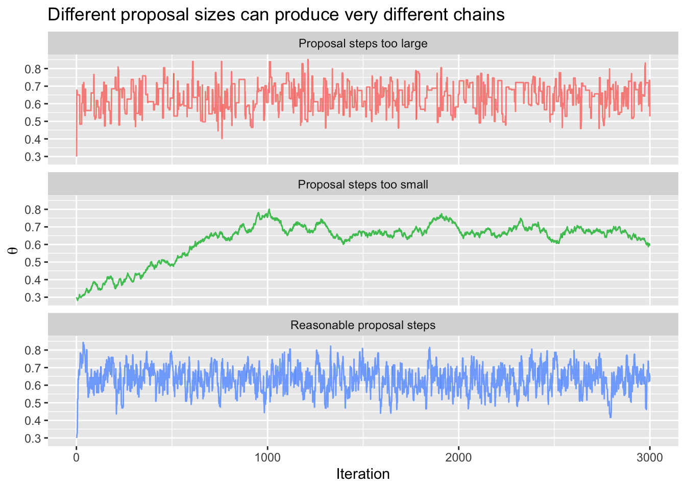
The trace plot is one of the first things to inspect in an MCMC analysis.
A healthy trace plot usually looks like a fuzzy caterpillar: it moves around a stable region without obvious trends, long flat sections, or permanent drifting.
TipA useful MCMC habit
Do not only look at the final posterior summary table.
Always ask:
- Did the chain explore the posterior?
- Did it get stuck?
- Did it depend too much on the starting value?
- Would another chain started somewhere else give a similar answer?
In professional Bayesian modelling, convergence diagnostics are essential. In this chapter, the main point is simpler:
MCMC gives approximate posterior draws, but we should check whether the simulation behaved sensibly.
9.11 Posterior prediction
So far, we have focused on \(\theta\), the unknown proportion of students who would use the late-night bus. But the university might also ask a more concrete question:
If \(1200\) students are on campus late during the exam period, how many might use the bus?
This is a prediction question.
A simple way to answer it is to use posterior simulation.
For each posterior draw of \(\theta\), we simulate a possible number of bus users among \(1200\) students:
\[ \begin{aligned} Y \mid \theta &\sim \text{Binomial}(1200, \theta). \end{aligned} \]
This includes two sources of uncertainty:
- uncertainty about \(\theta\);
- randomness in how many students actually use the service even if \(\theta\) were known.
set.seed(2420)
posterior_prediction <- posterior_draws |>
mutate(
predicted_users = rbinom(n(), size = 1200, prob = theta)
)
posterior_prediction |>
ggplot(aes(x = predicted_users, y = after_stat(density), color = "Posterior predictive distribution")) +
geom_histogram(bins = 40, fill = "white") +
geom_density(linewidth = 1) +
labs(
x = "Predicted number of bus users out of 1200 students",
y = "Density",
color = NULL,
title = "Posterior predictive distribution for bus usage"
) +
guides(color = guide_legend(override.aes = list(fill = NA)))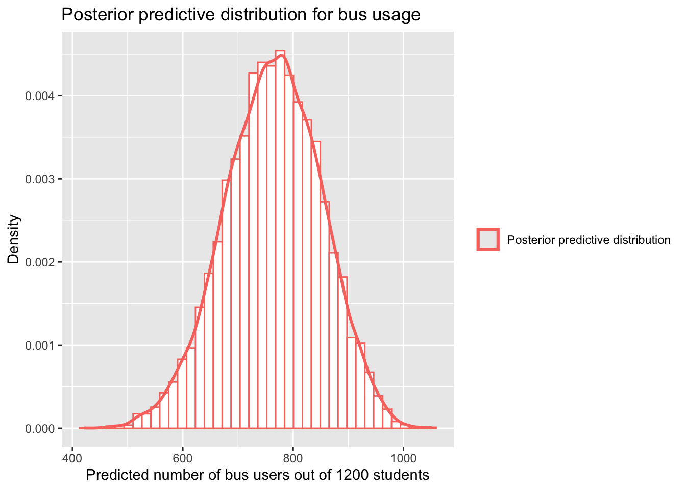
posterior_prediction |>
summarise(
`Predictive mean` = mean(predicted_users),
`Predictive median` = median(predicted_users),
`2.5% predictive quantile` = quantile(predicted_users, 0.025),
`97.5% predictive quantile` = quantile(predicted_users, 0.975),
`P(more than 700 users)` = mean(predicted_users > 700)
) |>
pivot_longer(
cols = everything(),
names_to = "Summary",
values_to = "Value"
) |>
mutate(Value = round(Value, 1)) |>
gt() |>
tab_options(table.width = pct(80))| Summary | Value |
|---|---|
| Predictive mean | 763.5 |
| Predictive median | 765.0 |
| 2.5% predictive quantile | 588.0 |
| 97.5% predictive quantile | 927.0 |
| P(more than 700 users) | 0.8 |
Posterior prediction is often more useful than parameter estimation alone. Decision-makers usually care about observable consequences: number of bus users, number of hospital beds needed, number of claims next month, number of support calls, or number of customers who will respond to an offer.
NoteParameter uncertainty and predictive uncertainty
A posterior distribution describes uncertainty about an unknown parameter.
A posterior predictive distribution describes uncertainty about future or unobserved data.
9.12 From posterior summaries to decisions
A posterior distribution is not the end of an analysis. It is often the beginning of a decision.
The university has to decide whether to run the late-night bus.
Suppose there are two possible actions:
\[ \begin{aligned} a_1 &= \text{run the bus}, \\ a_0 &= \text{do not run the bus}. \end{aligned} \]
The best action depends on the consequences.
Suppose running the service costs \(\$18{,}000\) during the exam period. Suppose each student trip is valued at \(\$20\) in safety, convenience, and avoided transport costs.
If \(Y\) students use the bus, the net value of running it is:
\[ \begin{aligned} \text{net value} &= 20Y - 18000. \end{aligned} \]
If the university does not run the bus, we will define the net value as \(0\) for comparison.
Using the posterior predictive draws, we can simulate the net value of running the service.
bus_decision <- posterior_prediction |>
mutate(
net_value_run = 20 * predicted_users - 18000,
better_to_run = net_value_run > 0
)
bus_decision |>
ggplot(aes(x = net_value_run, y = after_stat(density), color = "Net value if bus runs")) +
geom_histogram(bins = 40, fill = "white") +
geom_density(linewidth = 1) +
geom_vline(xintercept = 0, linetype = "dashed") +
labs(
x = "Net value of running the service",
y = "Density",
color = NULL,
title = "Posterior distribution of the net value of running the bus",
subtitle = "Values above zero favour running the service"
) +
scale_x_continuous(labels = dollar) +
guides(color = guide_legend(override.aes = list(fill = NA)))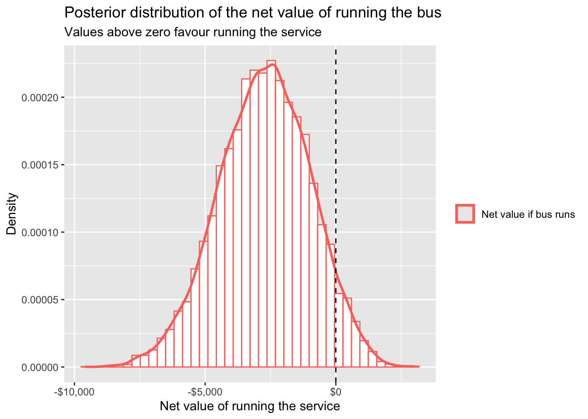
bus_decision |>
summarise(
`Expected net value if bus runs` = mean(net_value_run),
`Median net value if bus runs` = median(net_value_run),
`P(net value > 0)` = mean(net_value_run > 0),
`P(net value < -5000)` = mean(net_value_run < -5000)
) |>
pivot_longer(
cols = everything(),
names_to = "Summary",
values_to = "Value"
) |>
mutate(
Value = if_else(
str_detect(Summary, "P\\("),
as.character(round(Value, 3)),
dollar(round(Value, 0))
)
) |>
gt() |>
tab_options(table.width = pct(90))| Summary | Value |
|---|---|
| Expected net value if bus runs | -$2,730 |
| Median net value if bus runs | -$2,700 |
| P(net value > 0) | 0.054 |
| P(net value < -5000) | 0.098 |
This is a different kind of output from a confidence interval or a hypothesis test. We are using the posterior distribution to simulate consequences under each possible action.
The decision still requires judgement. The value of a safe trip is not an objective fact. The cost estimate may be uncertain. There may be equity concerns, reputational concerns, or legal obligations that are not captured by the simple calculation.
But the posterior simulation helps make the trade-off visible.
ImportantBayesian analysis does not remove judgement
Bayesian inference can clarify uncertainty.
Decision analysis can clarify trade-offs.
But the final decision still depends on values, costs, consequences, and context.
9.13 Loss functions
Decision theory gives a formal language for decisions under uncertainty.
A loss function describes how bad it is to take action \(a\) when the true state of the world is \(\theta\).
We write this as:
\[ \begin{aligned} L(\theta, a). \end{aligned} \]
In estimation problems, the action is usually a point estimate \(\hat{\theta}\). Different loss functions lead to different best estimates.
Two common loss functions are squared-error loss and absolute-error loss.
| Loss function | Formula | Bayes estimate | Penalises large errors? |
|---|---|---|---|
| Squared-error loss | L(theta, theta_hat) = (theta - theta_hat)^2 | Posterior mean | Strongly |
| Absolute-error loss | L(theta, theta_hat) = |theta - theta_hat| | Posterior median | Less strongly |
Under squared-error loss:
\[ \begin{aligned} L(\theta, \hat{\theta}) &= (\theta - \hat{\theta})^2. \end{aligned} \]
The Bayes estimator is the posterior mean:
\[ \begin{aligned} \hat{\theta}_{\text{Bayes}} &= E(\theta \mid X). \end{aligned} \]
Under absolute-error loss:
\[ \begin{aligned} L(\theta, \hat{\theta}) &= |\theta - \hat{\theta}|. \end{aligned} \]
The Bayes estimator is the posterior median.
For symmetric posterior distributions, the mean and median may be similar. For skewed posterior distributions, they can differ.
skewed_draws <- tibble(
theta = rbeta(10000, 3, 12)
)
skewed_summaries <- skewed_draws |>
summarise(
mean = mean(theta),
median = median(theta)
)
skewed_draws |>
ggplot(aes(x = theta, y = after_stat(density), color = "Posterior distribution")) +
geom_histogram(bins = 40, fill = "white") +
geom_density(linewidth = 1) +
geom_vline(
data = skewed_summaries,
aes(xintercept = mean, color = "Posterior mean"),
linetype = "dashed",
linewidth = 1
) +
geom_vline(
data = skewed_summaries,
aes(xintercept = median, color = "Posterior median"),
linetype = "dotted",
linewidth = 1
) +
labs(
x = expression(theta),
y = "Density",
color = NULL,
title = "Different loss functions can lead to different point estimates"
) +
guides(color = guide_legend(override.aes = list(fill = NA)))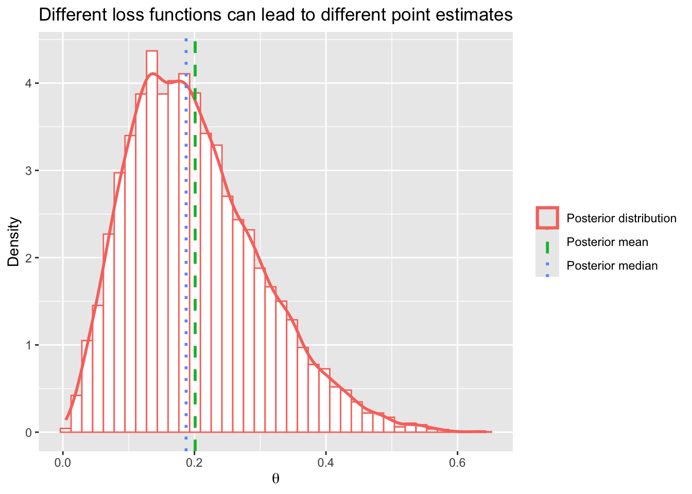
The important lesson is not that one summary is always better. The lesson is that a summary should match the purpose of the analysis.
If very large errors are especially bad, squared-error loss may be natural. If errors are judged more linearly, absolute-error loss may be more natural. If overestimation is more serious than underestimation, an asymmetric loss function may be more appropriate.
9.14 Asymmetric losses
Some mistakes are not equally bad in both directions.
Suppose a hospital is estimating the number of beds needed during a severe flu season. Overestimating demand may waste money. Underestimating demand may leave patients without beds. These errors are not equivalent.
A similar issue appears in the bus example. Underestimating demand may leave students waiting at night. Overestimating demand may waste money on an underused service.
One simple way to represent asymmetric loss is:
\[ \begin{aligned} L(\theta, \hat{\theta}) &= \begin{cases} 4(\theta - \hat{\theta}), & \text{if } \hat{\theta} < \theta, \\ \hat{\theta} - \theta, & \text{if } \hat{\theta} \geq \theta. \end{cases} \end{aligned} \]
This loss says that underestimating \(\theta\) is four times as costly as overestimating it.
In this case, a higher posterior quantile may be a better estimate than the posterior mean or median.
asymmetric_summary <- posterior_draws |>
summarise(
`Posterior mean` = mean(theta),
`Posterior median` = median(theta),
`Posterior 80% quantile` = quantile(theta, 0.80),
`Posterior 90% quantile` = quantile(theta, 0.90)
) |>
pivot_longer(
cols = everything(),
names_to = "Summary",
values_to = "Value"
)
asymmetric_summary |>
mutate(Value = round(Value, 3)) |>
gt() |>
tab_options(table.width = pct(80))| Summary | Value |
|---|---|
| Posterior mean | 0.636 |
| Posterior median | 0.638 |
| Posterior 80% quantile | 0.698 |
| Posterior 90% quantile | 0.728 |
The purpose of this section is not to memorise particular loss functions. It is to recognise that estimation and decision-making are connected.
A point estimate is not just a number. It is an action taken under uncertainty.
9.15 Prior information as pseudo-data
In Chapter 8, we used beta priors for proportions. One helpful interpretation of a beta prior is that it acts like pseudo-data.
For a beta-binomial model:
\[ \begin{aligned} \theta &\sim \text{Beta}(\alpha, \beta), \\ X \mid \theta &\sim \text{Binomial}(n, \theta), \\ \theta \mid X = x &\sim \text{Beta}(\alpha + x,\ \beta + n - x). \end{aligned} \]
The prior hyperparameters \(\alpha\) and \(\beta\) behave a little like prior counts:
- \(\alpha\) behaves like prior yes-counts;
- \(\beta\) behaves like prior no-counts;
- \(\alpha + \beta\) behaves like a prior sample size.
This interpretation is not perfect in every setting, but it is useful.
prior_strength <- tibble(
prior = c("Beta(1, 1)", "Beta(2, 2)", "Beta(10, 10)", "Beta(40, 40)"),
alpha = c(1, 2, 10, 40),
beta = c(1, 2, 10, 40),
prior_mean = alpha / (alpha + beta),
prior_sample_size = alpha + beta,
posterior_alpha = alpha + x,
posterior_beta = beta + n - x,
posterior_mean = posterior_alpha / (posterior_alpha + posterior_beta)
)
prior_strength |>
mutate(
prior_mean = round(prior_mean, 3),
posterior_mean = round(posterior_mean, 3)
) |>
select(
Prior = prior,
`Prior mean` = prior_mean,
`Prior pseudo-sample size` = prior_sample_size,
`Posterior mean` = posterior_mean
) |>
gt() |>
tab_options(table.width = pct(100))| Prior | Prior mean | Prior pseudo-sample size | Posterior mean |
|---|---|---|---|
| Beta(1, 1) | 0.5 | 2 | 0.643 |
| Beta(2, 2) | 0.5 | 4 | 0.636 |
| Beta(10, 10) | 0.5 | 20 | 0.600 |
| Beta(40, 40) | 0.5 | 80 | 0.550 |
All four priors have the same prior mean of \(0.5\). But they do not have the same strength. The stronger priors pull the posterior mean more strongly toward \(0.5\).
prior_strength_density <- prior_strength |>
select(prior, posterior_alpha, posterior_beta) |>
crossing(theta = seq(0.001, 0.999, length.out = 1000)) |>
mutate(
density = dbeta(theta, posterior_alpha, posterior_beta)
)
prior_strength_density |>
ggplot(aes(x = theta, y = density, color = prior)) +
geom_line(linewidth = 1) +
labs(
x = expression(theta),
y = "Posterior density",
color = "Prior",
title = "Priors with the same centre can have different strengths",
subtitle = "Stronger priors pull the posterior more strongly toward the prior mean"
)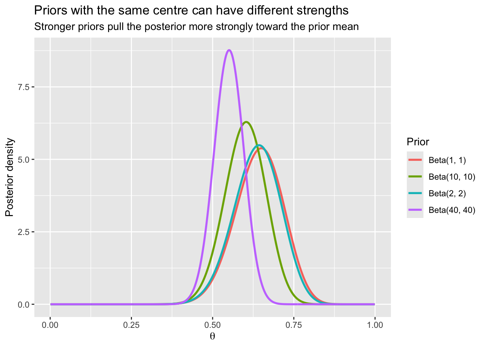
This connects back to sensitivity analysis. If different reasonable priors lead to very different posterior conclusions, the data may not be strong enough to settle the question.
9.16 A second story: estimating a rate
Not every Bayesian problem is about a proportion.
Suppose a regional clinic wants to estimate the average number of after-hours calls it receives each night during winter. This matters because staffing too few people can leave patients waiting, but staffing too many people is costly.
Let \(X_i\) be the number of after-hours calls on night \(i\).
A simple model is:
\[ \begin{aligned} X_i \mid \lambda &\sim \text{Poisson}(\lambda), \end{aligned} \]
where \(\lambda\) is the average number of calls per night.
Suppose the clinic records calls over \(14\) nights:
calls <- c(18, 22, 19, 26, 24, 21, 17, 25, 20, 23, 27, 19, 22, 24)
call_data <- tibble(
night = 1:length(calls),
calls = calls
)
call_data |>
ggplot(aes(x = night, y = calls, color = "Observed calls")) +
geom_line() +
geom_point(size = 2) +
labs(
x = "Night",
y = "Number of calls",
color = NULL,
title = "After-hours calls over 14 winter nights"
)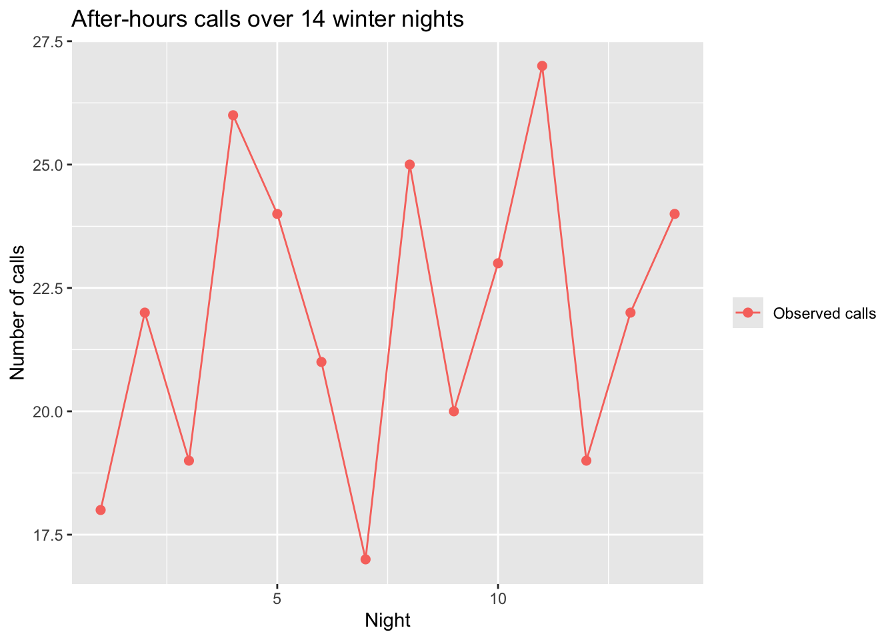
The sample mean is:
mean(calls)[1] 21.92857Suppose previous winters suggest around \(20\) calls per night, but with some uncertainty. A gamma prior is conjugate for the Poisson rate.
We write:
\[ \begin{aligned} \lambda &\sim \text{Gamma}(\alpha, \beta), \end{aligned} \]
where we use the shape-rate parameterisation. Under this parameterisation:
\[ \begin{aligned} E(\lambda) &= \frac{\alpha}{\beta}. \end{aligned} \]
Let:
\[ \begin{aligned} \lambda &\sim \text{Gamma}(20, 1). \end{aligned} \]
This prior has mean \(20\). It acts roughly like prior information equivalent to one night with \(20\) calls.
For Poisson data with a gamma prior, the posterior is:
\[ \begin{aligned} \lambda \mid x_1, \ldots, x_n &\sim \text{Gamma}\left(\alpha + \sum_{i = 1}^{n}x_i,\ \beta + n\right). \end{aligned} \]
alpha_lambda_prior <- 20
beta_lambda_prior <- 1
alpha_lambda_post <- alpha_lambda_prior + sum(calls)
beta_lambda_post <- beta_lambda_prior + length(calls)
lambda_draws <- tibble(
draw = 1:10000,
lambda = rgamma(10000, shape = alpha_lambda_post, rate = beta_lambda_post)
)
lambda_draws |>
ggplot(aes(x = lambda, y = after_stat(density), color = "Posterior draws")) +
geom_histogram(bins = 40, fill = "white") +
geom_density(linewidth = 1) +
labs(
x = expression(lambda),
y = "Density",
color = NULL,
title = "Posterior distribution for the average number of calls per night"
) +
guides(color = guide_legend(override.aes = list(fill = NA)))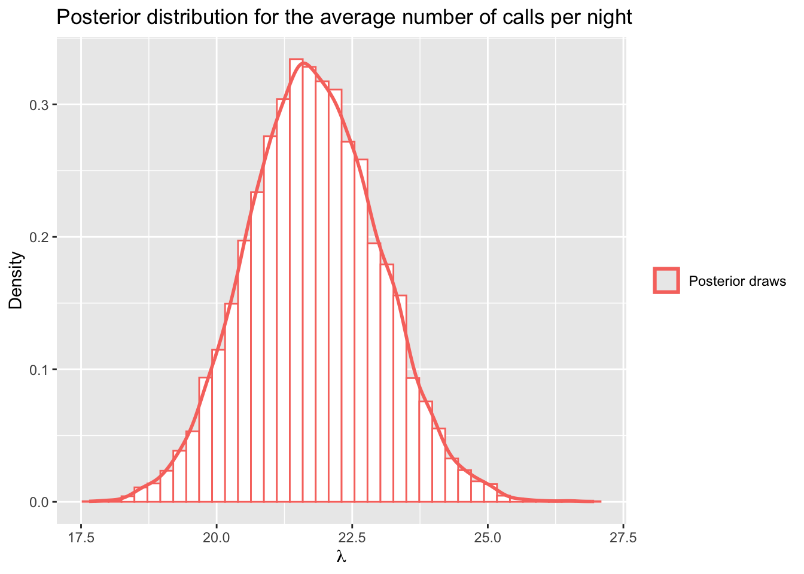
lambda_draws |>
summarise(
`Posterior mean` = mean(lambda),
`Posterior median` = median(lambda),
`2.5% quantile` = quantile(lambda, 0.025),
`97.5% quantile` = quantile(lambda, 0.975),
`P(lambda > 23)` = mean(lambda > 23)
) |>
pivot_longer(
cols = everything(),
names_to = "Summary",
values_to = "Value"
) |>
mutate(Value = round(Value, 2)) |>
gt() |>
tab_options(table.width = pct(80))| Summary | Value |
|---|---|
| Posterior mean | 21.79 |
| Posterior median | 21.77 |
| 2.5% quantile | 19.50 |
| 97.5% quantile | 24.16 |
| P(lambda > 23) | 0.16 |
Again, posterior simulation makes it easy to calculate the summaries we care about.
If the clinic needs to decide how many staff to roster, the posterior distribution of \(\lambda\) is useful. But an even more direct object is the posterior predictive distribution for tomorrow night.
set.seed(2420)
call_prediction <- lambda_draws |>
mutate(
tomorrow_calls = rpois(n(), lambda = lambda)
)
call_prediction |>
ggplot(aes(x = tomorrow_calls, color = "Posterior predictive distribution")) +
geom_bar(fill = "white") +
labs(
x = "Predicted calls tomorrow night",
y = "Frequency",
color = NULL,
title = "Posterior predictive distribution for tomorrow night's calls"
) +
guides(color = guide_legend(override.aes = list(fill = NA)))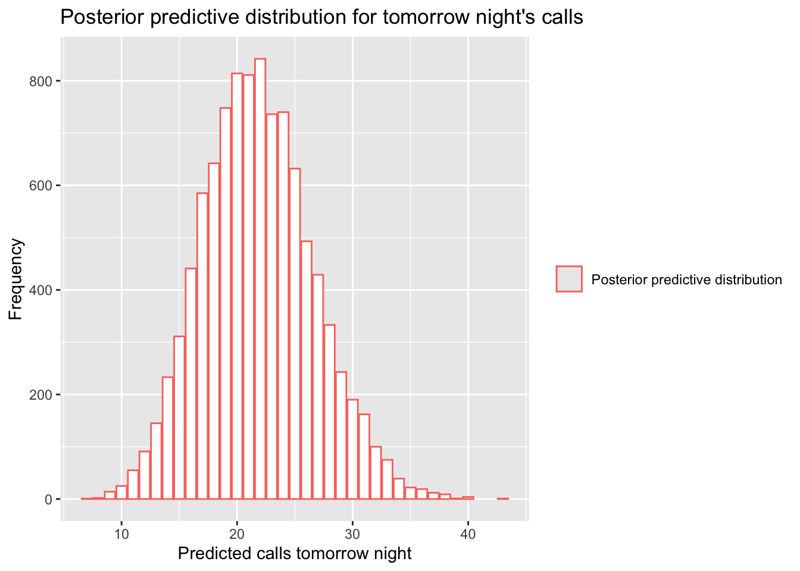
call_prediction |>
summarise(
`Predictive mean` = mean(tomorrow_calls),
`Predictive median` = median(tomorrow_calls),
`P(more than 25 calls)` = mean(tomorrow_calls > 25),
`P(more than 30 calls)` = mean(tomorrow_calls > 30)
) |>
pivot_longer(
cols = everything(),
names_to = "Summary",
values_to = "Value"
) |>
mutate(Value = round(Value, 2)) |>
gt() |>
tab_options(table.width = pct(80))| Summary | Value |
|---|---|
| Predictive mean | 21.80 |
| Predictive median | 22.00 |
| P(more than 25 calls) | 0.21 |
| P(more than 30 calls) | 0.04 |
This example shows how Bayesian simulation can move naturally from estimation to prediction to decisions.
9.17 Credibility as a weighted average
In conjugate Bayesian models, the posterior mean often looks like a compromise between the data and the prior.
For the beta-binomial model, the posterior mean is:
\[ \begin{aligned} E(\theta \mid X = x) &= \frac{\alpha + x}{\alpha + \beta + n}. \end{aligned} \]
This can be written as a weighted average of the sample proportion and the prior mean:
\[ \begin{aligned} E(\theta \mid X = x) &= Z\left(\frac{x}{n}\right) + (1 - Z)\left(\frac{\alpha}{\alpha + \beta}\right), \end{aligned} \]
where:
\[ \begin{aligned} Z &= \frac{n}{\alpha + \beta + n}. \end{aligned} \]
The value \(Z\) is sometimes called a credibility factor. It measures how much weight the posterior mean gives to the data-based estimate.
For the bus example:
credibility <- tibble(
`Sample proportion` = x / n,
`Prior mean` = alpha_prior / (alpha_prior + beta_prior),
`Credibility factor Z` = n / (alpha_prior + beta_prior + n),
`Posterior mean` = alpha_post / (alpha_post + beta_post)
)
credibility |>
pivot_longer(
cols = everything(),
names_to = "Quantity",
values_to = "Value"
) |>
mutate(Value = round(Value, 3)) |>
gt() |>
tab_options(table.width = pct(80))| Quantity | Value |
|---|---|
| Sample proportion | 0.650 |
| Prior mean | 0.500 |
| Credibility factor Z | 0.909 |
| Posterior mean | 0.636 |
The posterior mean is pulled toward the sample proportion because the data contain more information than the weak prior.
NoteCredibility factor
A credibility factor is the weight given to the data-based estimate in a posterior mean that can be written as a weighted average.
More data usually means a larger credibility factor.
9.18 Bayesian simulation as a workflow
The examples in this chapter all follow a similar pattern.
| Step | Bayesian workflow | Bus example |
|---|---|---|
| 1 | State the question clearly | Would enough students use the late-night bus? |
| 2 | Choose a probability model for the data | Survey yes-count follows a binomial distribution |
| 3 | Choose a prior distribution | Use a beta prior for the unknown proportion |
| 4 | Combine prior and likelihood to define the posterior | Posterior is proportional to prior times likelihood |
| 5 | Simulate from the posterior | Draw plausible values of theta |
| 6 | Summarise posterior and predictive uncertainty | Calculate credible intervals and P(theta > 0.60) |
| 7 | Use the posterior to inform decisions | Compare the net value of running or not running the service |
The main conceptual shift is this:
We do not need to reduce the posterior to one number too quickly.
A posterior distribution can be carried through the analysis. We can transform posterior draws, use them to predict future observations, and compare decisions.
9.19 Recap
In Chapter 8, we learned the logic of Bayesian updating:
\[ \begin{aligned} \text{posterior} &\propto \text{prior} \times \text{likelihood}. \end{aligned} \]
In this chapter, we learned how to work with the posterior once we have it.
The key ideas were:
- Posterior draws are simulated plausible parameter values.
- Posterior summaries can be calculated directly from posterior draws.
- Grid approximation uses prior times likelihood over many possible parameter values.
- MCMC is useful when grid approximation is too inefficient.
- Trace plots help us check whether an MCMC chain is exploring sensibly.
- Posterior predictive distributions describe uncertainty about future or unobserved data.
- Decisions can be compared by simulating consequences under the posterior.
- Different loss functions can lead to different Bayesian estimates.
Bayesian inference is sometimes introduced as a formula. But in practice, it is more like a workflow:
\[ \begin{aligned} \text{prior information} &\rightarrow \text{data} \\ &\rightarrow \text{posterior uncertainty} \\ &\rightarrow \text{prediction} \\ &\rightarrow \text{decision}. \end{aligned} \]
That final arrow matters. Statistical thinking is not only about calculating uncertainty. It is also about using uncertainty carefully.
9.20 Exercises
Short questions and longer applied questions are included below. Some questions ask for calculations; others ask you to explain concepts in words.
NoteQuestion 1
A small survey asks \(30\) students whether they would use a new weekend study shuttle. Of the \(30\) students, \(18\) say yes.
Assume:
\[ \begin{aligned} X \mid \theta &\sim \text{Binomial}(30, \theta), \\ \theta &\sim \text{Beta}(3, 3). \end{aligned} \]
- Find the posterior distribution for \(\theta\).
- Calculate the posterior mean.
- Interpret the posterior mean in context.
ImportantClick for Solutions
The posterior is:
\[ \begin{aligned} \theta \mid X = 18 &\sim \text{Beta}(3 + 18,\ 3 + 30 - 18) \\ &\sim \text{Beta}(21,\ 15). \end{aligned} \]
The posterior mean is:
\[ \begin{aligned} E(\theta \mid X = 18) &= \frac{21}{21 + 15} \\ &= \frac{21}{36} \\ &= 0.583. \end{aligned} \]
After combining the prior and the survey data, the estimated proportion of students who would use the weekend shuttle is about \(0.583\), or \(58.3\%\).
NoteQuestion 2
Explain the difference between a bootstrap distribution and a Bayesian posterior distribution.
In your answer, describe what is being simulated in each case.
ImportantClick for Solutions
A bootstrap distribution is created by resampling from the observed data. It describes how a statistic might vary across repeated samples similar to the one observed.
A Bayesian posterior distribution describes uncertainty about an unknown parameter after combining prior information with the likelihood from the observed data.
In the bootstrap, we simulate possible datasets or statistics. In Bayesian posterior simulation, we simulate plausible parameter values.
NoteQuestion 3
Suppose you have \(5000\) posterior draws for a parameter \(\theta\). Of these draws, \(3920\) are greater than \(0.7\).
Estimate:
\[ P(\theta > 0.7 \mid \text{data}). \]
Interpret the result.
ImportantClick for Solutions
The simulation estimate is:
\[ \begin{aligned} P(\theta > 0.7 \mid \text{data}) &\approx \frac{3920}{5000} \\ &= 0.784. \end{aligned} \]
The interpretation is that, given the prior and the observed data, the posterior probability that \(\theta\) is greater than \(0.7\) is approximately \(0.784\).
NoteQuestion 4
A researcher uses grid approximation for a proportion \(\theta\). They create the following unnormalised posterior weights:
| theta | unnormalised_weight |
|---|---|
| 0.1 | 0.02 |
| 0.2 | 0.10 |
| 0.3 | 0.24 |
| 0.4 | 0.12 |
| 0.5 | 0.02 |
- Normalise the weights.
- Which value of \(\theta\) has the highest posterior weight?
- Estimate the posterior mean using this grid.
ImportantClick for Solutions
The sum of the unnormalised weights is:
\[ \begin{aligned} 0.02 + 0.10 + 0.24 + 0.12 + 0.02 &= 0.50. \end{aligned} \]
The normalised weights are:
| theta | unnormalised_weight | posterior_weight |
|---|---|---|
| 0.1 | 0.02 | 0.04 |
| 0.2 | 0.10 | 0.20 |
| 0.3 | 0.24 | 0.48 |
| 0.4 | 0.12 | 0.24 |
| 0.5 | 0.02 | 0.04 |
The highest posterior weight is at \(\theta = 0.3\).
The posterior mean estimate is:
\[ \begin{aligned} E(\theta \mid \text{data}) &\approx 0.1(0.04) + 0.2(0.20) + 0.3(0.48) + 0.4(0.24) + 0.5(0.04) \\ &= 0.004 + 0.040 + 0.144 + 0.096 + 0.020 \\ &= 0.304. \end{aligned} \]
NoteQuestion 5
A Metropolis chain is used to simulate from a posterior distribution. The trace plot shows that the chain stays at exactly the same value for long periods, with only occasional jumps.
What might be going wrong? What could be adjusted?
ImportantClick for Solutions
The proposal steps may be too large. If proposed values are usually in low-posterior regions, they will often be rejected, causing the chain to remain at the same value for long stretches.
One possible adjustment is to reduce the proposal standard deviation so the chain proposes smaller, more acceptable moves.
However, proposal steps that are too small can also be a problem because the chain may move too slowly. The goal is to find a proposal size that allows the chain to explore the posterior without being rejected too often.
NoteQuestion 6
A clinic records the number of urgent phone calls received over \(10\) evenings:
\[ 14,\ 17,\ 15,\ 19,\ 18,\ 16,\ 20,\ 13,\ 17,\ 18. \]
Assume:
\[ \begin{aligned} X_i \mid \lambda &\sim \text{Poisson}(\lambda), \\ \lambda &\sim \text{Gamma}(12, 1), \end{aligned} \]
using the shape-rate parameterisation.
- Find the posterior distribution for \(\lambda\).
- Calculate the posterior mean.
- Interpret the result.
ImportantClick for Solutions
The total number of calls is:
\[ \begin{aligned} 14 + 17 + 15 + 19 + 18 + 16 + 20 + 13 + 17 + 18 &= 167. \end{aligned} \]
There are \(n = 10\) evenings.
For a gamma prior and Poisson likelihood:
\[ \begin{aligned} \lambda \mid x_1, \ldots, x_n &\sim \text{Gamma}\left(\alpha + \sum_{i = 1}^{n}x_i,\ \beta + n\right). \end{aligned} \]
Therefore:
\[ \begin{aligned} \lambda \mid \text{data} &\sim \text{Gamma}(12 + 167,\ 1 + 10) \\ &\sim \text{Gamma}(179,\ 11). \end{aligned} \]
The posterior mean is:
\[ \begin{aligned} E(\lambda \mid \text{data}) &= \frac{179}{11} \\ &= 16.27. \end{aligned} \]
After combining the prior with the observed call counts, the estimated average number of urgent calls per evening is about \(16.27\).
NoteQuestion 7
Under squared-error loss, what posterior summary is used as the Bayes estimator?
Under absolute-error loss, what posterior summary is used as the Bayes estimator?
ImportantClick for Solutions
Under squared-error loss, the Bayes estimator is the posterior mean.
Under absolute-error loss, the Bayes estimator is the posterior median.
This shows that the best point estimate depends on how we define loss.
NoteQuestion 8
A council is deciding whether to run a weekend community shuttle.
Posterior predictive simulation gives \(8000\) draws of the number of weekly users. For each draw, the council calculates the net value of running the service. The results are:
- mean net value: \(\$4200\);
- median net value: \(\$3900\);
- proportion of draws with net value above \(0\): \(0.87\);
- proportion of draws with net value below \(-5000\): \(0.04\).
Write a short paragraph explaining what these results suggest.
ImportantClick for Solutions
The posterior predictive simulation suggests that running the shuttle is likely to have positive net value. The mean net value is \(\$4200\) and the median is \(\$3900\), so the typical simulated outcome is favourable. About \(87\%\) of simulated outcomes have net value above zero, meaning the service is more likely than not to be beneficial under the assumptions of the model. There is still some downside risk, with about \(4\%\) of simulations producing a loss worse than \(\$5000\). A reasonable conclusion is that the shuttle looks promising, but the decision should also consider whether the council is comfortable with the remaining downside risk and whether the cost and value assumptions are credible.
NoteQuestion 9
A posterior distribution is highly skewed to the right.
Would you expect the posterior mean and posterior median to be identical? Which one would usually be larger?
ImportantClick for Solutions
They would usually not be identical.
For a distribution skewed to the right, the long right tail pulls the mean upward. Therefore, the posterior mean would usually be larger than the posterior median.
NoteQuestion 10
A student says:
MCMC is just a complicated version of the bootstrap.
Explain why this statement is misleading.
ImportantClick for Solutions
The statement is misleading because MCMC and the bootstrap simulate different things for different purposes.
The bootstrap resamples from the observed data to approximate the sampling distribution of a statistic. It is usually used to understand how a statistic might vary across repeated samples.
MCMC constructs a dependent sequence of parameter values whose long-run distribution approximates a posterior distribution. It is used in Bayesian inference when the posterior is difficult to sample from directly.
Both involve simulation, but they are not the same method and they answer different questions.